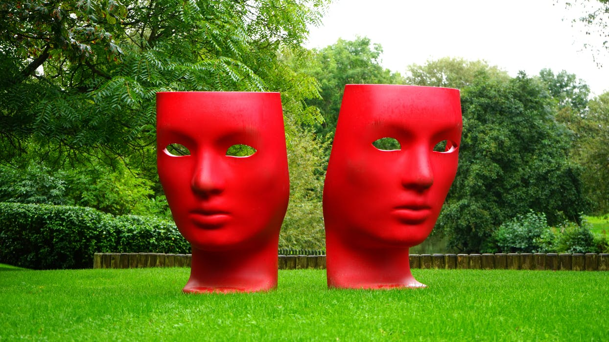
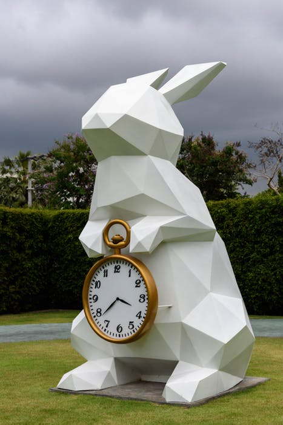
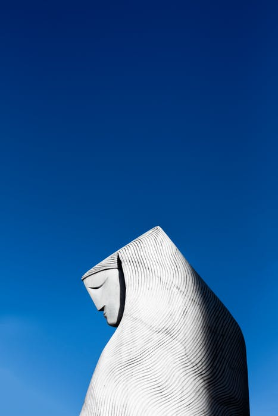

alex mastrovick
Mastrovick uses cut paper and basic two-dimensional materials to create three-dimensional large-scale installations. His language becomes a symbolic and visual device, insignificant pieces become the protagonists of his narrative imagery and explosions of color are challenged against solid color blocked figures.

In Black Bag: An American Philosophy of Composition, Mastrovick gives new meaning to a common plastic bag by personifying its role in his art and granting it a significant story. The bag interacts with characters in his narratives that are using it as a prop, acknowledging it, or engaging in a physical relationship with it.
In Love Is A Four Letter Word, Mastrovick continues the aesthetic of taking a simple but important idea and making it stand out. With more color, animal and human figures and a setting filled with forestry, the artist proposes questions about the idea of love, the different kinds of relationships among existing creatures and the ideas of color and emotion. Through his images, love becomes more than just a word; it takes on a visceral quality.